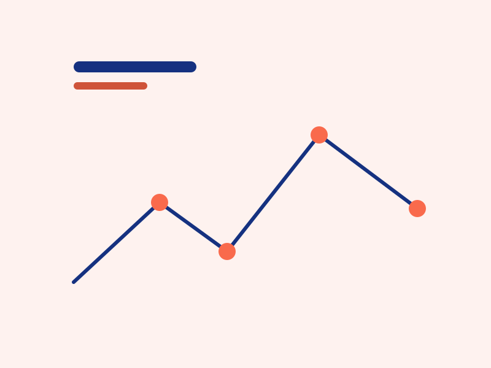

Caso de estudio · UX · UI
Rediseño de una app de reservas para clínicas
Cómo pasamos de un flujo de siete pasos a uno de tres y subimos las reservas completadas un 32%.
InvestigaciónPrototipadoDesign system

Rol
Lead product designer
Duración
4 meses · 2025
Equipo
1 PM, 3 devs, 1 diseñador
Herramientas
Figma, Maze, Glue
El problema
El 58% de los pacientes abandonaba la reserva antes de elegir hora. Las entrevistas mostraron dos causas: demasiados pasos y ninguna señal de cuánto faltaba.
"No sé si ya reservé o si todavía tengo que hacer algo más."— Paciente, entrevista 7
El proceso
Mapeamos el flujo actual, priorizamos con el equipo y probamos tres prototipos con 18 usuarios en Maze.

Resultados
+32%Reservas
completadas
3Pasos
antes eran 7
−45%Llamadas
a recepción